class: center, middle # Neural networks and Backpropagation Charles Ollion - Olivier Grisel .affiliations[    ] --- # Neural Network for classification Vector function with tunable parameters $\theta$ $$ \mathbf{f}(\cdot; \mathbf{\theta}): \mathbb{R}^N \rightarrow (0, 1)^K $$ -- Sample $s$ in dataset $S$: - input: $\mathbf{x}^s \in \mathbb{R}^N$ - expected output: $y^s \in [0, K-1]$ -- Output is a conditional probability distribution: $ \mathbf{f}(\mathbf{x}^s;\mathbf{\theta})_c = P(Y=c|X=\mathbf{x}^s) $ ??? the model parametrizes a conditional distribution of Y given X example: - x is the vector of the pixel values of an photo in an online fashion store - y is the type of the piece of closing (shoes, dress, shirt) represented in the photo --- # Artificial Neuron .center[ 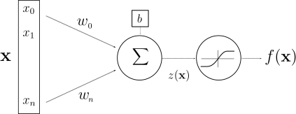 ] -- <br/> .center[ $z(\mathbf{x}) = \mathbf{w}^T \mathbf{x} + b$ $f(\mathbf{x}) = g(\mathbf{w}^T \mathbf{x} + b)$ ] - $\mathbf{x}, f(\mathbf{x}) \,\,$ input and output - $z(\mathbf{x})\,\,$ pre-activation - $\mathbf{w}, b\,\,$ weights and bias - $g$ activation function ??? McCullot & pitts: inspiration from brain, but simplistic model with no will to be close to biology --- # Layer of Neurons .center[ <img src="images/neural_network.svg" style="width: 400px;" /> ] -- <br/><br/> .center[ $\mathbf{f}(\mathbf{x}) = g(\textbf{z(x)}) = g(\mathbf{W} \mathbf{x} + \mathbf{b})$ ] <br/> - $\mathbf{W}, \mathbf{b}\,\,$ now matrix and vector --- # One Hidden Layer Network .center[ 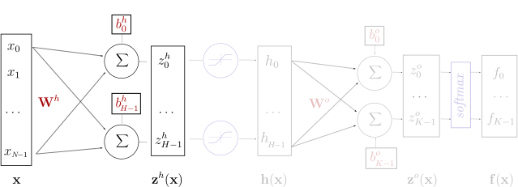 ] <br/> - $\mathbf{z}^h(\mathbf{x}) = \mathbf{W}^h \mathbf{x} + \mathbf{b}^h$ - <span style="color:#cccccc"> $\mathbf{h}(\mathbf{x}) = g(\mathbf{z}^h(\mathbf{x})) = g(\mathbf{W}^h \mathbf{x} + \mathbf{b}^h)$</span> - <span style="color:#cccccc"> $\mathbf{z}^o(\mathbf{x}) = \mathbf{W}^o \mathbf{h}(\mathbf{x}) + \mathbf{b}^o$</span> - <span style="color:#cccccc"> $\mathbf{f}(\mathbf{x}) = softmax(\mathbf{z}^o) = softmax(\mathbf{W}^o \mathbf{h}(\mathbf{x}) + \mathbf{b}^o)$</span> ??? also named multi-layer perceptron (MLP) feed forward, fully connected neural network logistic regression is the same without the hidden layer --- # One Hidden Layer Network .center[ 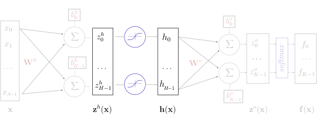 ] <br/> - <span style="color:#cccccc"> $\mathbf{z}^h(\mathbf{x}) = \mathbf{W}^h \mathbf{x} + \mathbf{b}^h$</span> - $\mathbf{h}(\mathbf{x}) = g(\mathbf{z}^h(\mathbf{x})) = g(\mathbf{W}^h \mathbf{x} + \mathbf{b}^h)$ - <span style="color:#cccccc"> $\mathbf{z}^o(\mathbf{x}) = \mathbf{W}^o \mathbf{h}(\mathbf{x}) + \mathbf{b}^o$</span> - <span style="color:#cccccc"> $\mathbf{f}(\mathbf{x}) = softmax(\mathbf{z}^o) = softmax(\mathbf{W}^o \mathbf{h}(\mathbf{x}) + \mathbf{b}^o)$</span> --- # One Hidden Layer Network .center[ 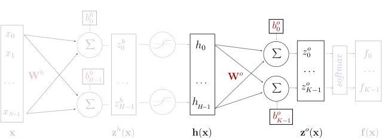 ] <br/> - <span style="color:#cccccc"> $\mathbf{z}^h(\mathbf{x}) = \mathbf{W}^h \mathbf{x} + \mathbf{b}^h$</span> - <span style="color:#cccccc"> $\mathbf{h}(\mathbf{x}) = g(\mathbf{z}^h(\mathbf{x})) = g(\mathbf{W}^h \mathbf{x} + \mathbf{b}^h)$</span> - $\mathbf{z}^o(\mathbf{x}) = \mathbf{W}^o \mathbf{h}(\mathbf{x}) + \mathbf{b}^o$ - <span style="color:#cccccc"> $\mathbf{f}(\mathbf{x}) = softmax(\mathbf{z}^o) = softmax(\mathbf{W}^o \mathbf{h}(\mathbf{x}) + \mathbf{b}^o)$</span> --- # One Hidden Layer Network .center[ <img src="images/neural_network_hidden_4.svg" style="width: 700px;" /> ] <br/> - <span style="color:#cccccc"> $\mathbf{z}^h(\mathbf{x}) = \mathbf{W}^h \mathbf{x} + \mathbf{b}^h$</span> - <span style="color:#cccccc"> $\mathbf{h}(\mathbf{x}) = g(\mathbf{z}^h(\mathbf{x})) = g(\mathbf{W}^h \mathbf{x} + \mathbf{b}^h)$</span> - <span style="color:#cccccc">$\mathbf{z}^o(\mathbf{x}) = \mathbf{W}^o \mathbf{h}(\mathbf{x}) + \mathbf{b}^o$</span> - $\mathbf{f}(\mathbf{x}) = softmax(\mathbf{z}^o) = softmax(\mathbf{W}^o \mathbf{h}(\mathbf{x}) + \mathbf{b}^o)$ --- # One Hidden Layer Network .center[ <img src="images/neural_network_hidden_t.svg" style="width: 700px;" /> ] ### Alternate representation .center[ 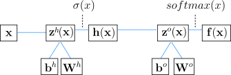 ] --- # One Hidden Layer Network .center[ <img src="images/neural_network_hidden_t.svg" style="width: 700px;" /> ] ### Keras implementation ```py model = Sequential() model.add(Dense(H, input_dim=N)) # weight matrix dim [N * H] model.add(Activation("tanh")) model.add(Dense(K)) # weight matrix dim [H x K] model.add(Activation("softmax")) ``` --- # Element-wise activation functions <br/> .center[ <img src="images/activation_functions.svg" style="width: 780px;" /> ] <br/></br> - blue: activation function - green: derivative ??? todo: add legend --- # Softmax function $$ softmax(\mathbf{x}) = \frac{1}{\sum_{i=1}^{n}{e^{x_i}}} \cdot \begin{bmatrix} e^{x_1}\\\\ e^{x_2}\\\\ \vdots\\\\ e^{x_n} \end{bmatrix} $$ $$ \frac{\partial softmax(\mathbf{x})_i}{\partial x_j} = \begin{cases} softmax(\mathbf{x})_i \cdot (1 - softmax(\mathbf{x})_i) & i = j\\\\ -softmax(\mathbf{x})_i \cdot softmax(\mathbf{x})_j & i \neq j \end{cases} $$ -- - vector of values in (0, 1) that add up to 1 - $p(Y = c|X = \mathbf{x}) = \text{softmax}(\mathbf{z}(\mathbf{x}))_c$ - the pre-activation vector $\mathbf{z}(\mathbf{x})$ is often called "the logits" --- # Training the network Find parameters $\mathbf{\theta} = ( \mathbf{W}^h; \mathbf{b}^h; \mathbf{W}^o; \mathbf{b}^o )$ that minimize the **negative log likelihood** (or [cross entropy]( https://en.wikipedia.org/wiki/Cross_entropy#Cross-entropy_loss_function_and_logistic_regression)) -- The loss function for a given sample $s \in S$: $$ l(\mathbf{f}(\mathbf{x}^s;\theta), y^s) = nll(\mathbf{x}^s, y^s; \theta) = -\log \mathbf{f}(\mathbf{x}^s;\theta)\_{y^s} $$ -- <br/> .center[ 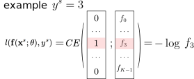 ] ??? Minimizing a cost function that depends on a finite training set belong to the framework of Empirical Risk Minimization. Adding a regularization term to the cost function Maximum A Posteriori https://en.wikipedia.org/wiki/Cross_entropy#Cross-entropy_loss_function_and_logistic_regression --- # Training the network Find parameters $\mathbf{\theta} = ( \mathbf{W}^h; \mathbf{b}^h; \mathbf{W}^o; \mathbf{b}^o )$ that minimize the **negative log likelihood** (or [cross entropy]( https://en.wikipedia.org/wiki/Cross_entropy#Cross-entropy_loss_function_and_logistic_regression)) The loss function for a given sample $s \in S$: $$ l(\mathbf{f}(\mathbf{x}^s;\theta), y^s) = nll(\mathbf{x}^s, y^s; \theta) = -\log \mathbf{f}(\mathbf{x}^s;\theta)\_{y^s} $$ The cost function is the negative likelihood of the model computed on the full training set (for i.i.d. samples): $$ L\_S(\theta) = -\frac{1}{|S|} \sum\_{s \in S} \log \mathbf{f}(\mathbf{x}^s;\theta)\_{y^s} $$ --- # Training the network Find parameters $\mathbf{\theta} = ( \mathbf{W}^h; \mathbf{b}^h; \mathbf{W}^o; \mathbf{b}^o )$ that minimize the **negative log likelihood** (or [cross entropy]( https://en.wikipedia.org/wiki/Cross_entropy#Cross-entropy_loss_function_and_logistic_regression)) The loss function for a given sample $s \in S$: $$ l(\mathbf{f}(\mathbf{x}^s;\theta), y^s) = nll(\mathbf{x}^s, y^s; \theta) = -\log \mathbf{f}(\mathbf{x}^s;\theta)\_{y^s} $$ The cost function is the negative likelihood of the model computed on the full training set (for i.i.d. samples): $$ L\_S(\theta) = -\frac{1}{|S|} \sum\_{s \in S} \log \mathbf{f}(\mathbf{x}^s;\theta)\_{y^s} + \lambda \Omega(\mathbf{\theta}) $$ $\lambda \Omega(\mathbf{\theta}) = \lambda (||W^h||^2 + ||W^o||^2)$ is an optional regularization term. ??? Minimizing a cost function that depends on a finite training set belong to the framework of Empirical Risk Minimization. Adding a regularization term to the cost function Maximum A Posteriori --- # Stochastic Gradient Descent Initialize $\mathbf{\theta}$ randomly -- For $E$ epochs perform: - Randomly select a small batch of samples $( B \subset S )$ -- - Compute gradients: $\Delta = \nabla_\theta L\_B(\theta)$ -- - Update parameters: $\mathbf{\theta} \leftarrow \mathbf{\theta} - \eta \Delta$ - $\eta > 0$ is called the learning rate -- - Repeat until the epoch is completed (all of $S$ is covered) -- Stop when reaching criterion: - nll stops decreasing when computed on validation set --- # Computing Gradients <br/><br/> .left-column[ Output Weights: $\frac{\partial l(\mathbf{f(x)}, y)}{\partial W^o_{i,j}}$ Hidden Weights: $\frac{\partial l(\mathbf{f(x)}, y)}{\partial W^h_{i,j}}$ ] .right-column[ Output bias: $\frac{\partial l(\mathbf{f(x)}, y)}{\partial b^o_{i}}$ Hidden bias: $\frac{\partial l(\mathbf{f(x)}, y)}{\partial b^h_{i}}$ ] $\,$ -- - The network is a composition of differentiable modules - We can apply the "chain rule" --- # Chain rule <br/><br/> .center[ 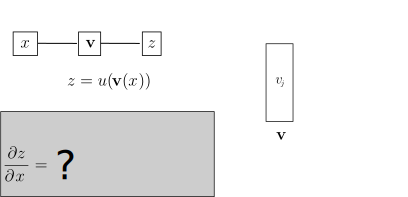 ] --- # Chain rule <br/><br/> .center[ 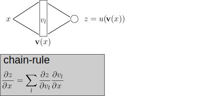 ] --- # Chain rule <br/><br/> .center[ ] --- # Chain rule <br/><br/> .center[ 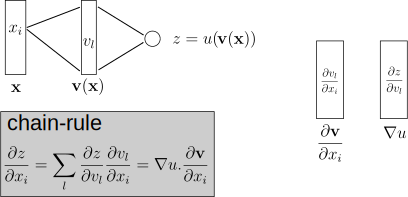 ] --- name: bprop # Backpropagation .center[ 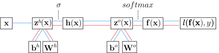 <br/><br/> ] --- template: bprop Compute partial derivatives of the loss - $\frac{\partial l(\mathbf{f(x)}, y)}{\partial \mathbf{f(x)}\_i} = \frac{\partial -\log \mathbf{f(x)}\_y}{\partial \mathbf{f(x)}\_i} = \frac{-1\_{y=i}}{\mathbf{f(x)}\_y} = \frac{\partial \boldsymbol{l}}{\partial \mathbf{f(x)}\_i}$ -- - $\frac{\partial \boldsymbol{l}}{\partial \mathbf{z}^o(\mathbf{x})_i} = ?$ --- .center[ 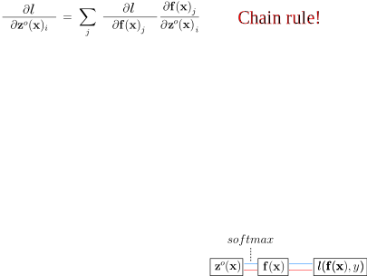 ] --- .center[ <img src="images/equations_2.svg" style="width: 800px;" /> ] --- .center[ 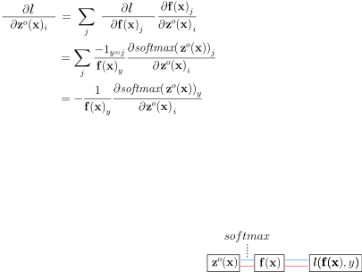 ] --- .center[ 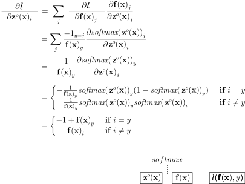 ] --- .center[ 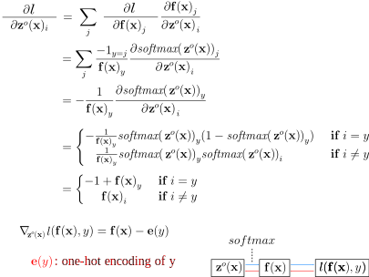 ] --- template: bprop Gradients - $\nabla\_{\mathbf{z}^o(\mathbf{x})} \boldsymbol{l} = \mathbf{f(x)} - \mathbf{e}(y)$ - $\nabla\_{\mathbf{b}^o} \boldsymbol{l} = \mathbf{f(x)} - \mathbf{e}(y)$ because $\mathbf{z}^o(\mathbf{x}) = \mathbf{W}^o \mathbf{h}(\mathbf{x}) + \mathbf{b}^o$ and then $\frac{\partial \mathbf{z}^o(\mathbf{x})\_i}{\partial \mathbf{b}^o\_j} = 1\_{i=j}$ --- template: bprop Partial derivatives related to $\mathbf{W}^o$ - $\frac{\partial \boldsymbol{l}}{\partial W^o\_{i,j}} = \sum\_{k} \frac{\partial \boldsymbol{l}}{\partial \mathbf{z}^o(\mathbf{x})\_k} \frac{\partial \mathbf{z}^o(\mathbf{x})\_k}{\partial W^o\_{i,j}}$ - $\nabla\_{\mathbf{W}^o} \boldsymbol{l} = (\mathbf{f(x)} - \mathbf{e}(y)) . \mathbf{h(x)}^\top$ --- # Backprop gradients ### Compute activation gradients - $\nabla\_{\mathbf{z}^o(\mathbf{x})} \boldsymbol{l} = \mathbf{f(x)} - \mathbf{e}(y)$ -- ### Compute layer params gradients - $\nabla\_{\mathbf{W}^o} \boldsymbol{l} = \nabla\_{\mathbf{z}^o(\mathbf{x})} \boldsymbol{l} \cdot \mathbf{h(x)}^\top$ - $\nabla\_{\mathbf{b}^o} \boldsymbol{l} = \nabla\_{\mathbf{z}^o(\mathbf{x})} \boldsymbol{l}$ -- ### Compute prev layer activation gradients - $\nabla\_{\mathbf{h(x)}} \boldsymbol{l} = \mathbf{W}^{o\top} \nabla\_{\mathbf{z}^o(\mathbf{x})} \boldsymbol{l}$ - $\nabla\_{\mathbf{z}^h(\mathbf{x})} \boldsymbol{l} = \nabla\_{\mathbf{h(x)}} \boldsymbol{l} \odot \mathbf{\sigma^\prime(z^h(x))}$ --- class: center,middle # Loss, Initialization and Learning Tricks --- ## Discrete output (classification) - Binary classification: $y \in [0, 1]$ - $Y|X=\mathbf{x} \sim Bernoulli(b=f(\mathbf{x} ; \theta))$ - output function: $logistic(x) = \frac{1}{1 + e^{-x}}$ - loss function: binary cross-entropy - Multiclass classification: $y \in [0, K-1]$ - $Y|X=\mathbf{x} \sim Multinoulli(\mathbf{p}=\mathbf{f}(\mathbf{x} ; \theta))$ - output function: $softmax$ - loss function: categorical cross-entropy ??? Binary and multinomial logistic regression are the same but with a linear parametrization of the parameters. --- ## Continuous output (regression) - Continuous output: $\mathbf{y} \in \mathbb{R}^n$ - $Y|X=\mathbf{x} \sim \mathcal{N}(\mathbf{\mu}=\mathbf{f}(\mathbf{x} ; \theta), \sigma^2 \mathbf{I})$ - output function: Identity - loss function: square loss - Heteroschedastic if $\mathbf{f}(\mathbf{x} ; \theta)$ predicts both $\mathbf{\mu}$ and $\sigma^2$ - Mixture Density Network (multimodal output) - $Y|X=\mathbf{x} \sim GMM_{\mathbf{x}}$ - $\mathbf{f}(\mathbf{x} ; \theta)$ predicts all the parameters: the means, covariance matrices and mixture weights ??? Ordinary Least Squares and Ridge regression (OLS + l2 penalty on the weights) are the same but with a linear parametrization of the Gaussian mean parameters. More generally any link function from the Generalized Linear Model literature can be used for the output layer of the neural network. It's also possible to predict the distribution parameters of several conditionally independent output variables (discrete and continuous) with a multi-head neural network by adding their respective log likelihood in the joint objective function. --- ## Initialization and normalization - Input data should be normalized to have approx. same range: - standardization or quantile normalization -- - Initializing $W^h$ and $W^o$: - Zero is a saddle point: no gradient, no learning -- - Constant init: hidden units collapse by symmetry -- - Solution: random init, ex: $w \sim \mathcal{N}(0, 0.01)$ -- - Better inits: Xavier Glorot and Kaming He & orthogonal -- - Biases can (should) be initialized to zero ??? - std too small: slow training (saddle point plateau) - std too big: risk of divergence - $\mathcal{N}$ can yield extreme values that make the training dynamics unstable: trimmed normal or uniform init are safer. - Gain of $\W$ should be such that the variance of forward activations and backward gradients is approximately preserved from one layer to the next: interacts with fan-in, fan-out, type of activation functions and scale of inputs. - Random biases init can lead to dead units by making the relu activation zero or a tanh activation always saturated therefore killing the unit. - Some network architectures (Batch normalization, Skip / Residual connections) can make the learning dynamics less sensitive to init --- ## SGD learning rate - Very sensitive: - Too high $\rightarrow$ early plateau or even divergence - Too low $\rightarrow$ slow convergence -- - Try a large value first: $\eta = 0.1$ or even $\eta = 1$ - Divide by 10 and retry in case of divergence -- - Large constant LR prevents final convergence - multiply $\eta_{t}$ by $\beta < 1$ after each update -- - or monitor validation loss and divide $\eta_{t}$ by 2 or 10 when no progress - See [ReduceLROnPlateau](https://keras.io/callbacks/#reducelronplateau) in Keras ??? Overview of recent research and empirical tricks: https://towardsdatascience.com/understanding-learning-rates-and-how-it-improves-performance-in-deep-learning-d0d4059c1c10 Increase LR linearly when increasing batch-size. --- ## Momentum Accumulate gradients across successive updates: $$\begin{eqnarray} m\_t &=& \gamma m\_{t-1} + \eta \nabla\_{\theta} L\_{B\_t}(\theta\_{t-1}) \nonumber \\\\ \theta\_t &=& \theta\_{t-1} - m\_t \nonumber \end{eqnarray}$$ $\gamma$ is typically set to 0.9 -- Larger updates in directions where the gradient sign is constant to accelerate in low curvature areas -- ### Nesterov accelerated gradient $$\begin{eqnarray} m\_t &=& \gamma m\_{t-1} + \eta \nabla\_{\theta} L\_{B\_t}(\theta\_{t-1} - \gamma m\_{t-1}) \nonumber \\\\ \theta\_t &=& \theta\_{t-1} - m\_t \nonumber \end{eqnarray}$$ Better at handling changes in gradient direction. --- .center[ <img src="images/momentum-00.png" style="width: 800px;" /> [Why Momentum Really Works](https://distill.pub/2017/momentum/) ] --- .center[ 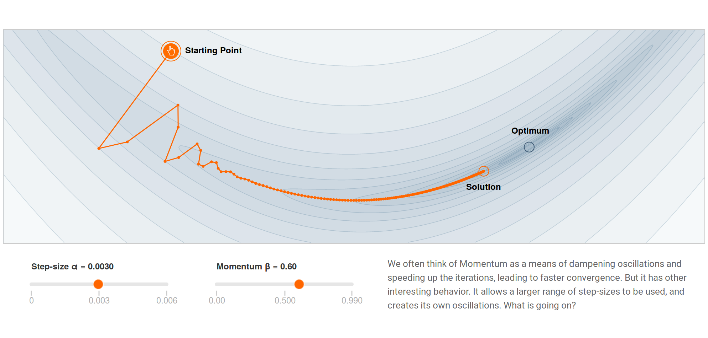 [Why Momentum Really Works](https://distill.pub/2017/momentum/) ] --- .center[ 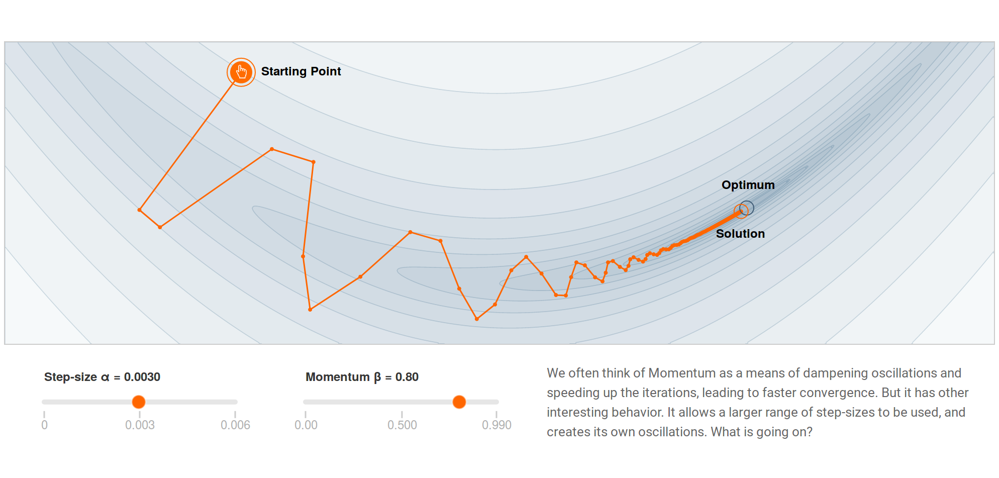 [Why Momentum Really Works](https://distill.pub/2017/momentum/) ] --- .center[ 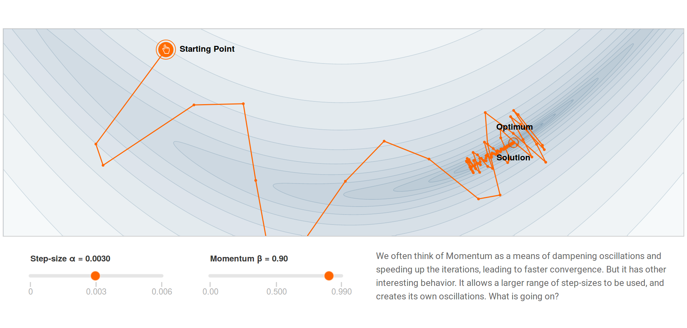 [Why Momentum Really Works](https://distill.pub/2017/momentum/) ] --- ## Alternative optimizers - SGD (with Nesterov momentum) - Simple to implement - Very sensitive to initial value of $\eta$ - Need learning rate scheduling -- - Adam: adaptive learning rate scale for each param - Global $\eta$ set to 3e-4 often works well enough - Good default choice of optimizer (often) -- - But well-tuned SGD with LR scheduling can generalize better than Adam (with naive l2 reg)... -- - Promising stochastic second order methods: [K-FAC](https://arxiv.org/abs/1503.05671) and [Shampoo](https://arxiv.org/abs/2002.09018) can be used to accelerate training of very large models. ??? Contrary to penalized models with a convex loss function, the learning problem (generalization) is strongly coupled to the optimization problem (training). - Decoupled Weight Decay Regularization https://arxiv.org/abs/1711.05101 - Three Mechanisms of Weight Decay Regularization https://arxiv.org/abs/1810.12281 --- ## The Karpathy Constant for Adam .center[ 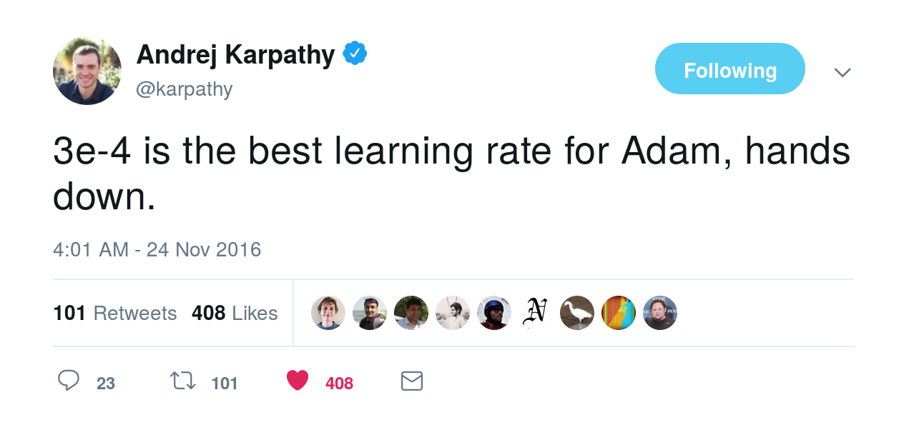 ] --- ## Optimizers around a saddle point .center[ <img src="images/contours_evaluation_optimizers.gif" style="width: 500px;" /> Credits: Alec Radford ] ??? Beware of toy 2D examples though. Also this example loss is not stochastic. Dealing with variations in curvatures might be a tougher problem. --- class: middle, center # Lab 2: back in 15min!